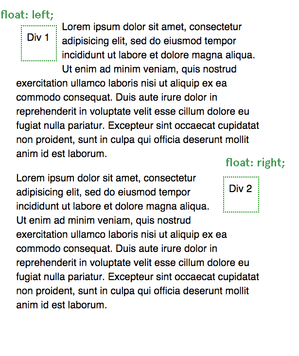

CSS Fundamentals
Class & Id
Along with tag based selectors, CSS rules can be applied by adding a class or id to a tag. Class and ID work essentially the same way but have different uses and syntax.
Class
Classes describe a basic set of styles that can be applied multiple tags in an HTML page. In HTML a class is added to an element with the class attribute.
<div class="content"></div>
Classes can be applied to multiple elements in a layout and multiple classes can be applied to one element:
<div class="content post active"></div> <div class="content post"></div> <div class="content post"></div>
IDs can only be used once, on one element:
<div id="header"></div> <div id="main"></div>
Classes and IDs can be contained in the same div:
<div id="header" class="content"></div> <div id="main" class="content post"></div>
In CSS, rules for classes use a period or full stop (.) while IDS use the hashtag (#).
#header {
background-color:gray;
font-size:2em;
height:60px;
}
.content {
background-color:lightgray;
font-size:1em;
width:40px;
}
Nested selectors
We can also use the relationships between HTML elements to create styles. An element that is a child of another element can be selected with a space between two selector tags. For example, the following HTML:
<ul> <li><a href="index.html">Home</a></li> <li><a href="about.html">About</a></li> </ul>
Can be styled with the following rules:
ul {
width:200px;
height:20px;
list-style:none;
}
ul li {
display:inline;
}
ul li a {
color: blue;
}
ul li a:hover {
color:darkblue;
}
There are selectors for other relationships beyond the ancestor/parent to descendant/child. See all of the possibilities for selectors here.
Pseudo selectors
a:hover { } is a pseudo selector. Pseudo selectors refer to interactive states that change after the page is loaded. :hover is when the mouse hovers over an element.
:visiter, :active and :focus are other common pseudo selectors.
Color
Color is subjective and dynamic. Colors signify different meanings to different viewers. Similarly, the way color is displayed physically also changes between mediums. Even with computers, the number of colors, the brightness and the general gamut of color can change from machine to machine.
Josef Albers is a great resource for any exploration of color. His Interaction of Color presents the theory that colors relate to one another in a deceptive and elusive logic.

Print vs. screen
One of challenges of designing with a computer is the difference between subtractive and additive color. Screens and devices, which use light to create color, are additive, meaning the combination of all colors creates white, while the absence of color (or light) is black. With print color, the addition of pigment darker colors, while white is the absence of color (pigment). As web designers we basically avoid this problem, because we’re not concerned with our designs being printed on a physical piece of paper. While print color is based on the CMYK mode, all screens use RGB as a standard. But within that standard there is a lot of variance. Every device supports a slightly different “gamut” or range of colors. RGB has a large gamut, but it is not the full spectrum of visible light. RGB can produce millions of colors.
CSS color values
Hexadecimal values are used to represent web-safe colors. Although most devices can now support millions of colors, using web-safe colors is still considered good practice and requires less download time because the hexadecimal value is a few characters shorter than the RGB value. Here’s the same color in hexadecimal:
blockquote { color: #5768e5; }
CSS styles can be written using RGB.
blockquote { color: rgb(87, 104, 229); }
The problem with RGB when it comes to design is that it describes color the way a computer creates it and not the way that we as humans see it. When it comes to design, HSB (hue, saturation, brightness), or HSL (hue, saturation, lightness) is a more a intuitive model.
In HSL, hue is the color value on the color wheel from 0 (red) to 360 (also red), saturation is the amount of color from 0% to 100%, meaning 100% will be full color and 0% will be grayscale, and lightness from 0% to 100%, which is the amount of white vs black.
CSS has introduced HSL to make writing color rules more intuitive.
blockquote { hsl(233, 73%, 62%); }
The color wheel was developed by Johann Itten, who a Swiss painter and theorist who was part of the Bauhaus school. He had a monk like devotion to work and color.
Color schemes
Adobe Kuler color scheme designer
Monochromatic. One hue is chosen, while the brightness and saturation can be varied. This is popular in many comic books and print publications, where using multiple colors can be expensive. I think that creates a retro feel, because we’re used to seeing it in print.
Analogous color schemes are created by selecting colors that sit next to one another on the color wheel. These tend to have a natural, harmonious feel. Seen in paintings of nature like this Edward Hopper.

Complementary color schemes are popular on the web. In these schemes there is a dominant color and its compliment on the other side of the color wheel. This creates bold contrasts like in Starry Night by Van Gogh.

Triadic schemes use three colors equally distant on the color wheel. They were popular in early comic books that used a lot of basic color to make images and characters pop out of the page.

Typography

We start where this video leaves off, with digital typography. The image above shows all of the fonts available on the first Apple computer. One of the ways Apple changed the industry was the introduction of new type faces.
In early 90s, fonts were controlled by browsers, not the authors of web pages. This reflected the top down, information heavy approach of early web architects. Netscape was the first browser to introduce customized fonts with the <font> tag. At this point, the font had to be downloaded by the user’s computer, or it would default to one of the browser font faces. Later, each new CSS specification introduced wider support for new web fonts.
“Web-safe” fonts were the dominant font group for many years. These were fonts that were most likely to be available on any given machine. These included:
Arial , Courier New, Times New Roman, Comic Sans MS, Impact, Georgia, Trebuchet MS, Monospace, Verdana and others.
The syntax for a CSS font rule looks like this:
font-family: Helvetica, Arial, sans-serif;
This is called a font-stack. This is used for cases when a particular font is not supported or does not load, there will be a back up font that is closer to the desired font choice.
It’s usually safest to include only one font family on your web design. There are a lot of examples of sites that break this convention, but the decision has to be specific and considered for it to work. Throwing fonts around the page can quickly make your site look like you copied your code from the 90s. One use of multiple fonts you will see is article that use a specific font for headers while using a more generic font for the body text. This gives you the ability to have a unique feel to your site while maintaining the readability of a font that people are familiar with.
New fonts also impact loading times. The more font you use, the longer it will take your page to render.
To look at new fonts that are available, check out Google fonts. You can also upload font files and use them with the @font-face property.
Box model
The position, size and layout of HTML elements is determined by the CSS box model, the display property and floats. Without these rules, HTML pages are rendered in the order of the elements from the top to the bottom.
All block HTML elements can be assigned properties for their border, padding and margin, as well as width and height to describe the dimensions of the content. (If width and height are not used, the content box will fit the content). The border can be assigned a color. The padding takes on the color of the background of the element. The margin is transparent. These properties can be assigned values in increments of pixels, such as border-width:10px; or em, a unit equal to the font-size of the element, such as margin:1em; or percentages, based on the width of the element such as padding: 5%;
The width and height of each block element can also be set in px, em or %. HTML elements without width or height properties will expand to fit the content inside of them.
The above example shows this rule (highlighted by Google Chrome Inspect Element):
p {
border:10px solid transparent;
margin:10px;
padding:10px;
}These rules can also be applied to one side of the box, with the following rules:
border-top:
border-bottom:
border-right:
border-left:Which can be applied to padding and margin as well.
The side can also be combined into one rule. margin: 1em; will apply a 1em margin to each side. margin: 1em 0; will apply a 1em margin to the top and bottom and a 0 margin to the right and left sides. Using four numbers, we can apply in this order- top, right, bottom, left (clockwise around the circle), so, margin: 1em 0 10px 5px; is equivalent to:
margin-top:1em;
margin-right:0;
margin-bottom:10px;
margin-left:5px;Other properties include auto, which will attempt to fill the space between an element and its parent, inherit, which will inherit the rule from the parent element, and initial, which will set it to the initial property of the element tag name.
Display property
The display property determines the horizontal space of each element. Elements with display: block; will take up the entire width of the page, their own “block”. Block elements can be assigned box model properties. Inline elements can not. Elements that default to block display include h1-h6, div, ul, li, p and others. Default inline elements include span, em, strong and a.

Block display.

Inline display.
Elements can also be set to display: none; which makes them not appear in the layout. This has advantages that we’ll look at next class in combination with pseudo tags. There are also hybrid elements like inline-block, which allows an inline element to be given padding, margin and border, as well as width and height.
Positions
Before going into positions, we should introduce the div HTML tag: <div>. This stands for division. It is a generic HTML element used for creating divisions of content. They default to block display. They can be used to organize different sections of content on an HTML page.
CSS positions determine how elements fit into the flow of an HTML page.
All elements default to position: static; meaning they stay in the vertical flow on an HTML page and cannot be offset.

Changing an element to position: relative; means that the element will stay in the normal flow of the HTML page, but we now have access to offsets, properties which allow us to position the element certain distances on the top, right, left and bottom of the element.
position:absolute; takes the element out of the normal flow and places it relative to the parent container, but only if that parent container is position: relative;
In this case, the parent container is the <body>
Notice that Div 2 is no longer in order with the rest of the elements.
Using position: fixed; will place the element relative to the window regardless of any other element. For example, any fixed navigation window is using a position:fixed; element, like this example.
When using positions like relative, absolute and fixed, we also have access to the z-index property, which determines the order the elements are rendered on the screen, like layers in Photoshop. An element with a lower z-index property will appear behind an element with a higher z-index property. z-index can range from -9999 to 9999.
Float
Sometimes you want to take an element out of the flow of the HTML page without changing the basic position. To do this you can use the float property. If we apply float: left; or float: right; to an element, it will float as far as possible to the left or right side of the element it is contained inside. If you apply float to multiple elements they will float in order to either side. To stop floating, use clear: left; or clear: right; or clear: both;
Other content will wrap around the float:
Transition and animation
CSS3 has introduced experimental features which have gained near universal support for doing simple animations and transition with CSS, which used to only be available with JavaScript.
a:hover { transition: color 1s ease-in-out; }
Animations use the same transition syntax with keyframes.